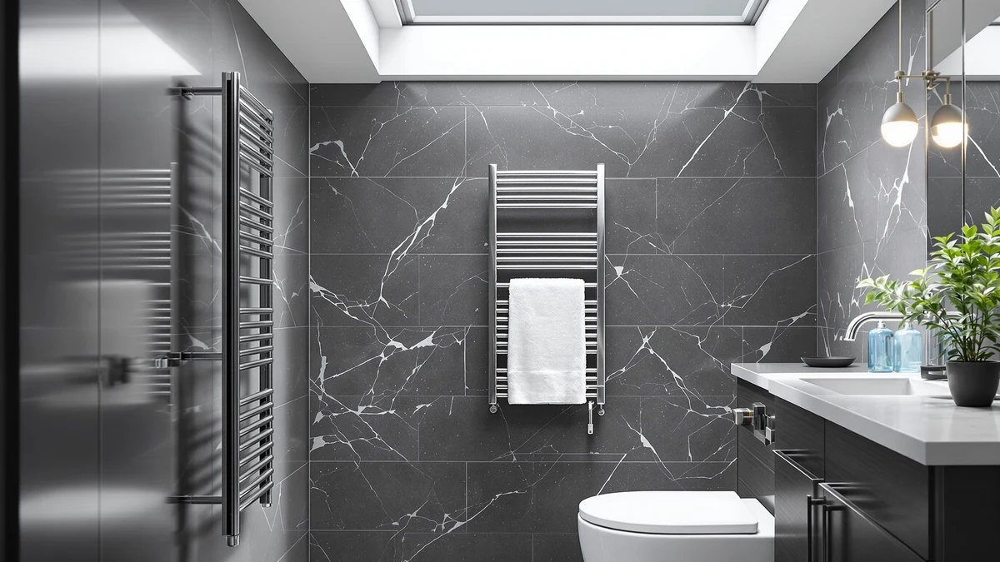

How to Hang Towel Warmer (2026)
Prices and picks verified as of August 2026. Independent, reader-supported reviews.


Things to Know Before You Buy
- Most units use two wall brackets. A stud finder and a level do most of the work before you ever pick up a drill.
- Plug-in models skip the electrician. Anything that hardwires into your circuit does not; most local codes want a licensed electrician for that part.
- Weight matters more than people think. A wet towel adds real pull, so anchors rated under 20 pounds are not enough to hang a towel warmer safely on drywall alone.
- Clearance from the tub is a code issue, not a preference. Most manuals call for at least 24 inches between the unit and any spray zone.
- Bucket-style warmers avoid drilling almost entirely. Worth considering if you rent or want to skip the wall-mount step.
How to hang towel warmer racks comes down to five steps, and none of them require an electrician if you buy a plug-in model. Pick a spot near a stud and a GFCI outlet, mark and level your holes, drill and anchor them, hang the rack on its brackets, and test the heat. Each step matters more than it looks, since a rack anchored into flimsy drywall cones or hung a half-inch off level shows the mistake the first time you drape a towel over it.
This guide walks through that sequence for the plug-in wall-mounted warmers most people buy, the kind that only need a drill, a level, and an outlet already in the room. If your unit hardwires into the wall instead of using a cord, stop before the wiring step and call a licensed electrician, since most local codes require one and a bathroom circuit is not a place to guess. For everyone else, the steps below get a warm towel waiting for you within the hour.
What You'll Need
- Supplies: wall anchors or toggle bolts rated for at least 20 pounds, the mounting screws included with your unit, and painter's tape for marking hole positions
- Tools: a stud finder, a cordless drill with driver bits, a 4-foot level, a tape measure, and a pencil
Step 1: Pick a Spot and Find the Studs
Before you hang a towel warmer, settle on a wall section within reach of the tub or shower, since a dripping towel should not travel far to reach it. Hold the unit against a few candidate spots and picture a towel draped over it at a comfortable reach, usually with the bottom bar around 48 inches off the floor.
Run a stud finder slowly across that section and mark any framing you find with a pencil. A bracket anchored into a stud holds far more weight than one sunk into bare drywall, and a warmer loaded with a soaked towel pulls harder than most people expect. You do not need both brackets on studs, but landing even one there makes the whole install sturdier.
Check the clearance from the tub or shower edge against the minimum in your manual, typically 24 inches or more, and confirm a GFCI outlet sits within the cord's reach. Skip any outlet behind the vanity that would force the cord across a walkway. Once the spot checks out on all three counts, mark its center with a strip of painter's tape so you don't lose it.
Step 2: Mark and Level the Mounting Holes
Most towel warmers ship with a paper template, or you can trace the bracket itself. Tape it to the wall at your chosen height and set a level across the top edge. Adjust the template until the bubble sits dead center, because a rack that hangs even a half-inch off level looks crooked the moment a towel lands on it.
Push a pencil through each hole in the template to transfer the marks to the wall. Peel the template away and compare the marks against the stud locations you found earlier. If a mark lands close to a stud edge, nudge the whole layout an inch to center it, rather than drilling into the edge of the framing where the anchor has less to grip.
Step 3: Drill Pilot Holes and Set the Anchors
Match your drill bit to what sits behind each mark. Use a smaller pilot bit for a stud, since the screw threads need something to bite into, and a bit sized to your wall anchor for the marks on bare drywall. On tile, switch to a masonry bit and start slow with steady pressure so it does not skate across the glaze and chip it.
Drill straight in to the depth your anchors call for, backing the bit out every few seconds to clear dust. For the drywall marks, tap a toggle bolt or a heavy-duty anchor flush with the wall, and skip the thin cone anchors that ship in some kits, since they loosen under a wet towel's weight within a few weeks. Vacuum each hole before you move on so the anchor seats fully.
Step 4: Attach the Brackets and Hang the Warmer
Hold the first bracket over its anchors and drive the screws until it sits snug against the wall. Stop as soon as it stops turning easily, because overtightening can strip a drywall anchor and leave the screw spinning loose. Repeat for the second bracket, then run your level across both one more time before you commit.
Lift the towel warmer and line up its hooks, slots, or pins with the brackets. Let the unit settle into place on its own rather than forcing it, since most designs are built to drop straight down or slide on with almost no resistance. Check the underside for a small set screw, which many models include to pin the frame to the bracket so a hard tug on a towel cannot lift it free.
Step back and look at the whole unit from a few feet away. The bars should read level and sit close to the wall with no visible gap on one side. Fix anything that looks off now, since that is much easier before you route the cord and treat the job as done.
Step 5: Route the Cord and Test the Heat
Run the power cord straight down the wall to your GFCI outlet and secure any slack with a cord clip so it does not dangle across the floor or catch on a foot. Plug it in and switch the unit on. If your model hardwires into the wall instead of using a cord, stop here and bring in a licensed electrician, since most local codes require one for bathroom circuit work.
Let the warmer run a full cycle and feel a bar or the bucket wall after about ten minutes. It should warm evenly along its length with no hot spots, cold sections, or a burning smell. Hang a towel on it and check again once the cycle finishes to see how it performs loaded.
Press the test button on the GFCI outlet while the unit runs. The power should cut immediately, which confirms the safety circuit is doing its job, and you can reset the button right after. That single test is the cheapest insurance you get on the whole project, and it is worth running before you hang a towel warmer for the first time in a house with kids or guests.
Common Mistakes to Avoid
The most common mistake when you hang a towel warmer is trusting the flimsy plastic cone anchors that ship in some hardware kits. Those cones hold a picture frame fine, but a rack loaded with a wet towel works them loose within weeks, and the whole unit ends up tilting or pulling away from the wall. Swap them for toggle bolts or heavy-duty anchors rated for at least 20 pounds, and land at least one bracket on a stud whenever the layout allows it.
Skipping the level check is another frequent slip. A bracket that looks straight against the wall can still hang crooked once a towel drapes over it, so run your level across both brackets before you drive the final screws, not just the first one. People also rush the outlet choice and plug into an extension cord or a power strip tucked behind the vanity. Bathroom circuits and standing water make that a real hazard, and most cords are not rated for continuous heat-appliance use anyway. Plan the spot around an existing GFCI outlet instead.
Last, do not skip the clearance check from the tub or shower. Mounting a warmer too close to the spray zone can put it outside your local electrical code and closer to moisture than the manual allows. Check the minimum distance before you mark a single hole, not after the brackets are already on the wall.
Our Top Picks
Whether you plan to hang a towel warmer on a stud wall or want a model that skips the bracket work, these three picks cover the range.

Editor’s Pick
SereneLife WIFI Luxury Rectangle Towel
A wide rectangular rack with app control, built with the two-bracket mounting pattern this guide walks through. The WiFi timer is a nice extra, but the bracket install underneath is the same job either way.
$105.99
Check Price on Amazon
Best Value
ZAFRO Luxury Towel Warmer Bucket
The bucket style skips wall brackets almost entirely, since it sits on a counter or a small shelf bracket instead. It's the fastest route to a warm towel if you want to avoid drilling.
$35.88
Check Price on Amazon
Premium Choice
Sweetcrispy Towel Warmer for Bathroom
A wall-mounted bar warmer with a compact footprint that fits a narrow stretch of wall between the tub and the door. Two brackets, four screws, and it's up.
$40.37
Check Price on AmazonHow do you hang a towel warmer without drilling into a stud?
Use heavy-duty toggle bolts or anchors rated for at least 20 pounds in the spots that land on bare drywall.
How high should you mount a towel warmer on the wall?
Most people set the bottom bar around 48 inches off the floor, which keeps a folded towel off the ground and within easy reach.
Frequently Asked Questions
How do you hang a towel warmer without drilling into a stud?
Use heavy-duty toggle bolts or anchors rated for at least 20 pounds in the spots that land on bare drywall. A loaded warmer plus a wet towel pulls harder than the bare rack, so the thin plastic cone anchors that ship in some kits are not enough on their own. Landing even one bracket on a stud still helps, but a full drywall mount can hold as long as the hardware is rated for the weight.
How high should you mount a towel warmer on the wall?
Most people set the bottom bar around 48 inches off the floor, which keeps a folded towel off the ground and within easy reach. Drop that to about 42 inches in a kids' bathroom. Check your manual for the minimum clearance from the tub or shower edge too, usually 24 inches or more, before you settle on a final height.
Can you hang a towel warmer on tile?
Yes, with a masonry or tile bit and a slow, steady hand. Start the drill at low speed so the bit doesn't skate across the glaze and crack it, and try to avoid grout lines, where the tile has less to grip. What sits behind the tile, whether that's drywall, cement board, or a stud, decides which anchor you use.
How long does it take to hang a towel warmer?
Plan on 45 minutes to an hour for a plug-in unit once you have a drill, a level, and a stud finder in hand. Finding studs and checking clearances takes up a good chunk of that time, and the actual bracket and hang portion runs closer to 20 minutes. A hardwired model takes longer, since an electrician has to handle the circuit connection.
Do you need an electrician to hang a towel warmer?
Not for a plug-in model. You mount the brackets, hang the rack, and plug the cord into a nearby GFCI outlet, with no wiring involved. A hardwired unit that ties into your home's circuit is a different job, and most local codes call for a licensed electrician to handle that connection.
Verdict
Knowing how to hang a towel warmer comes down to five steps you can finish in under an hour: find your studs, mark and level the holes, drill and set the anchors, hang the unit on its brackets, and test the power through a GFCI outlet. The details that separate a secure mount from a sagging one are simple. Use anchors rated for real weight instead of the flimsy cones some kits include, and land at least one bracket on a stud whenever your layout allows it. Skip the wiring yourself if your model hardwires into the wall, and call a licensed electrician instead. For most bathrooms, a plug-in rack like the SereneLife WIFI Luxury Rectangle Towel warmer above follows this exact bracket-and-hang process, so the steps here apply directly whether you buy that one or something similar. Get the anchors and the level right, and the rack will hold a warm towel through years of daily use.